Od kočaricedo tri ribarnice.
Naši počeci sežu u 1986. godinu, kada smo otvorili obrt za otkup i prodaju ribe od domaćih ribara. Evo kako je priča rasla.
Obrt More-Lošinj
Nakon niza godina kočarenja otvoren je obrt, kako bi priča postala cjelovita. Obrt je počeo raditi u Malom Lošinju, nasuprot zgrade današnje tvrtke, i bavio se otkupom i prodajom ribe od domaćih ribara.
Pult u gradskoj ribarnici
Da bismo proširili posao, u najam smo uzeli pult u ribarnici u centru Malog Lošinja i otad svoje proizvode prodajemo i preko ribarnice.
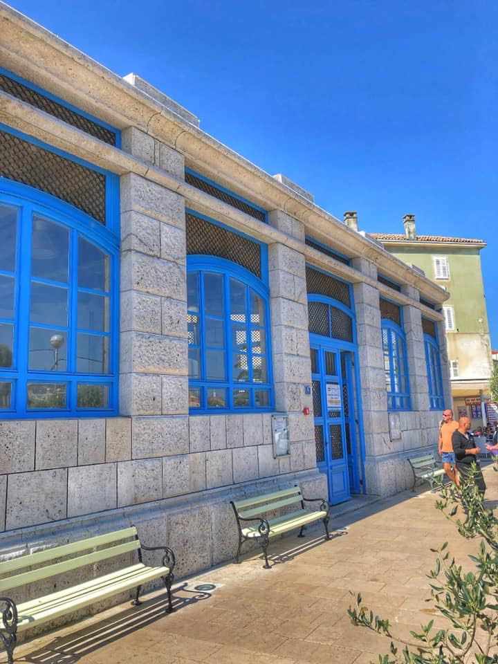
Počinje raditi uzgajalište
Uzgajalište je smješteno u uvali Kaldonta na Cresu, u blizini Punta Križe. Počeli smo s 10 kaveza, a danas ih imamo 48. Nakon nekoliko pokušaja s drugim ribama i školjkašima zaključili smo da je položaj najpogodniji za orade i brancine, pa od tada uzgajamo isključivo njih.
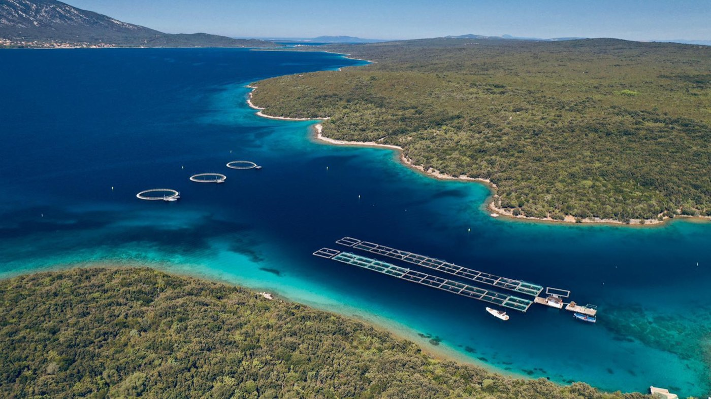
Osnovana tvrtka More-Lošinj d.o.o.
Iz obrta je nastala tvrtka koja se bavi uzgojem orada i brancina te otkupom i prodajom ribe od domaćih kočara. Iste godine tvrtka se preselila u novu zgradu u Dražici, gdje je i danas.

Ribarnica Nerezine
Da bismo ribu mogli nuditi duž Cresa i Lošinja, otvorili smo vlastitu ribarnicu u centru Nerezina.
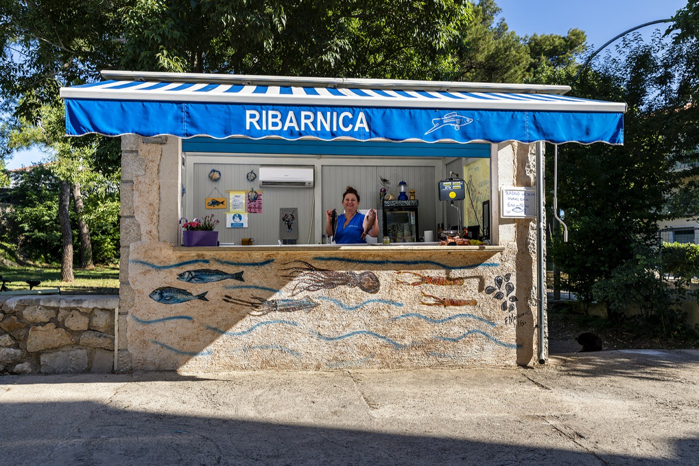
Riba Hrvatske – Jedi što vrijedi!
Od početaka nam je kvaliteta uzgojne ribe glavna zadaća. Hrvatska gospodarska komora dodijelila nam je naljepnice „Riba Hrvatske” kojima je naša riba označena kao izvorni hrvatski proizvod.
Ribarnica Martinšćica
Nakon Nerezina proširili smo se i na otok Cres i otvorili ribarnicu u Martinšćici.
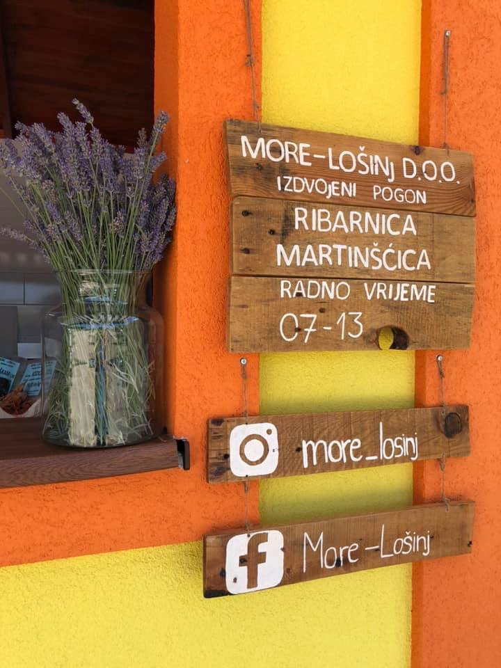
Novi kavezi
Uz pomoć fondova Europske unije kupili smo tri nova kaveza za uzgoj ribe. Kavezi su okrugli, promjera 25 m, s ugrađenim hodnim stazama.
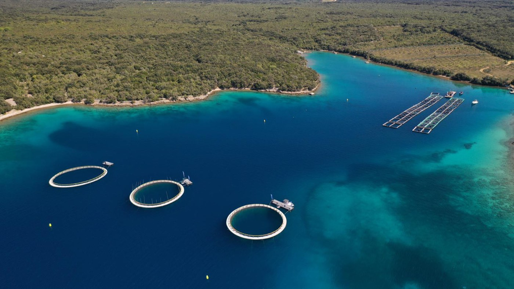
Iz uzgajališta i s pulta.
Fotografije iz Kaldonte i naših ribarnica.
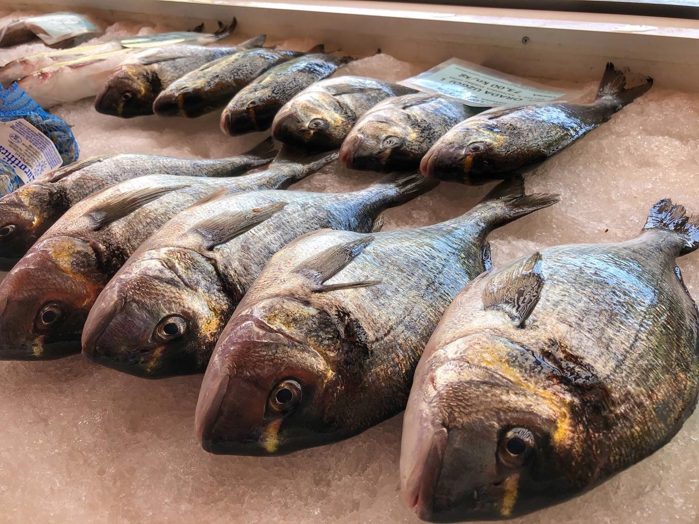

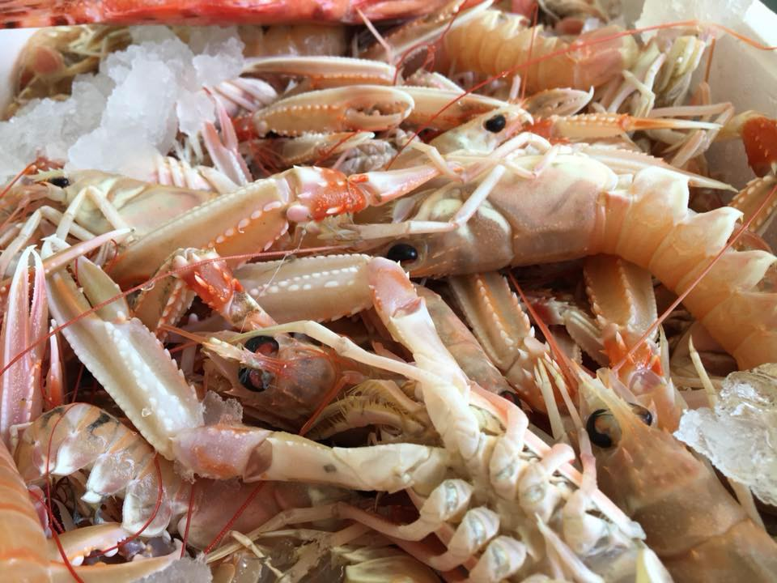
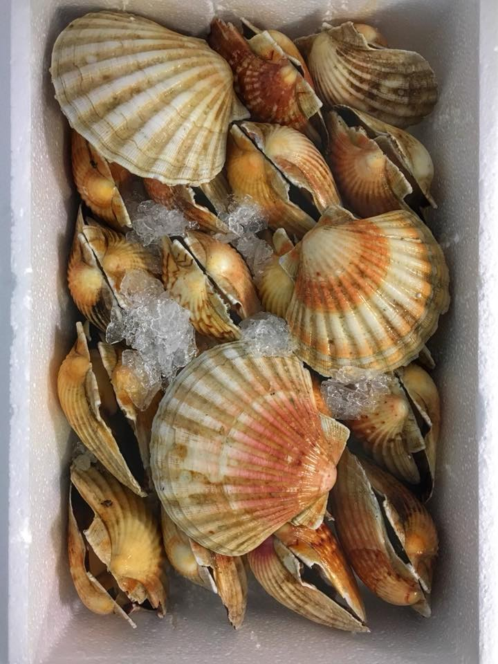

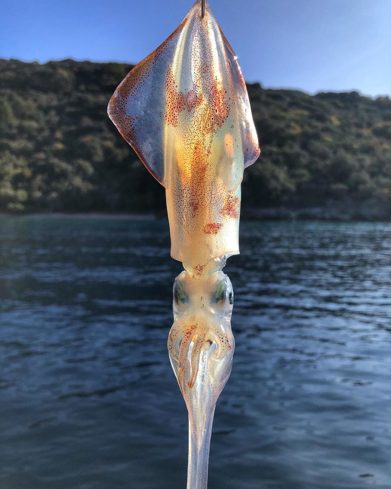
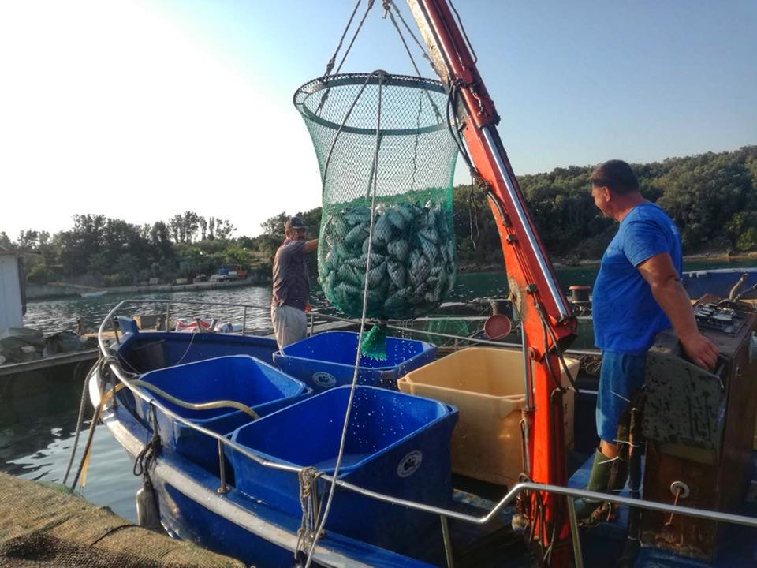
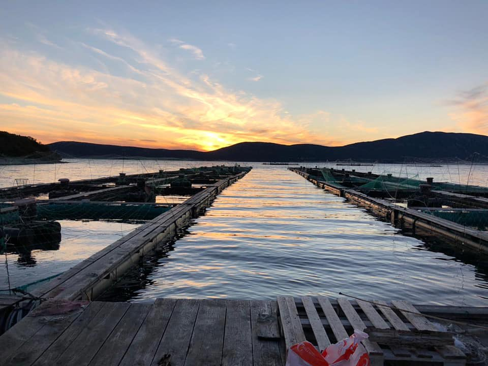
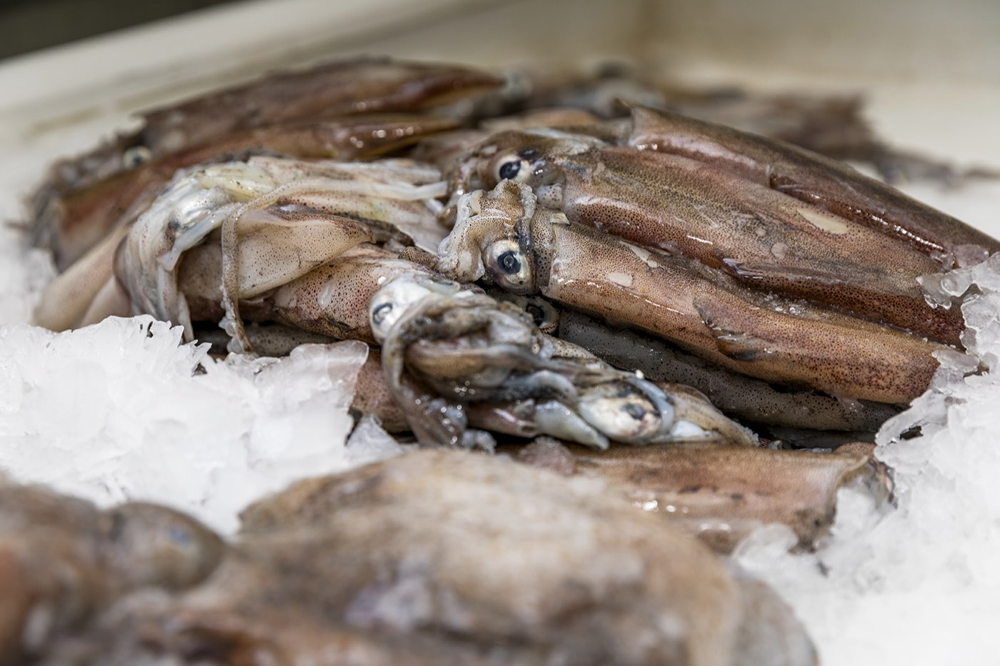